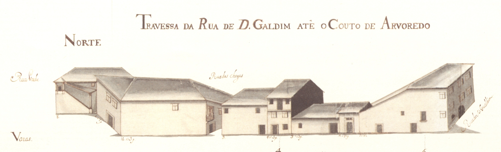

Travessa da Rua de D.Gualdim até ao Couto do Arvoredo
Descrição:
Mais um fragmento da rua das Travessas, o último no sentido Este-Oeste. Só no último quartel do século passado a rua das Travessas se prolongaria além da rua Verde e Couto do Arvoredo, cortando a muralha, para desembocar no campo das Carvalheiras, então chamado de S.Miguel o Anjo.
A transformação recebida há cem anos nesta artéria, qua a fez passar a ter o dobro da largura, destruiu todas as casas apresentadas no Mappa. E pena foi, porque embora este troço de rua seja de interesse secundário na cidade de então, apresentava uma casa brasonada, em pedra, de 3 pisos, no gaveto com a rua de D. Gualdim e uma curiossísima casa com escada exterior, talvez quinhentista, nada vulgar neste documento.
Das 6 casas do lado Norte e 7 do Sul, são prazos do Cabido 2 de cada lado.
Esta travessa, está atualmente integrada na rua D. Afonso Henriques.
Corresponde ao n.º 1 da Rua de Santo António, para onde tem a frontaria e serventia principais.
Corresponde ao n.º 22 da Rua de Santo António, para onde tem a frontaria e serventia principais.
Fica situada nesta travessa «na parte que, à mão direita, liga a Rua das Chagas à Rua Verde».
Corresponde ao n.º 15 da Rua de D. Gualdim, para onde tem a frontaria e serventia principais.
Casas:
| Número | Enfiteuta | Foro | Descrição |
|---|---|---|---|
| 1 | Padre José António Pereira | 290 reis e 2 galinhas | |
| 2 | Corresponde ao n.º 1 da Rua de Santo António, para onde tem a frontaria e serventia principais. | ||
| 3 | None | None | Corresponde ao n.º 22 da Rua de Santo António, para onde tem a frontaria e serventia principais. |
| 4 | Inácio José Leite, ourives | 225 e reis e 3 galinhas | Fica situada nesta travessa «na parte que, à mão direita, liga a Rua das Chagas à Rua Verde». |
| 5 | None | None | Corresponde ao n.º 15 da Rua de D. Gualdim, para onde tem a frontaria e serventia principais. |
Imagens:
Travessa da Rua de Gualdim até ao Couto do Arvoredo - norte
Travessa da Rua de Gualdim até ao Couto do Arvoredo - sul

Fotos atuais da rua: